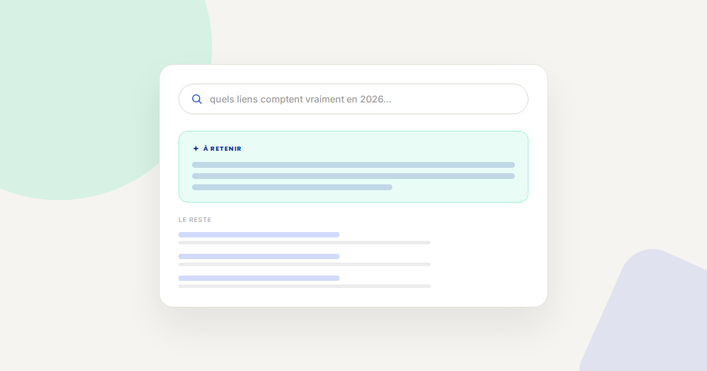
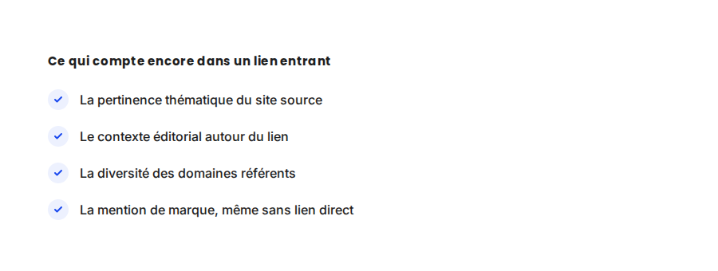

Netlinking en 2026 : ce qui compte encore pour Google et pour les IA
Le netlinking reste l'un des sujets SEO les plus mal compris : entre les pratiques d'achat de liens massif d'il y a dix ans et le netlinking d'aujourd'hui, presque rien n'est comparable. Voici ce qui compte réellement, pour Google comme pour les IA génératives qui commencent à s'appuyer sur des signaux proches.

Dans les audits SEO que je mène, le netlinking reste souvent la partie la plus mal comprise par les clients : certains pensent encore qu'acheter 50 liens sur des annuaires suffit à faire remonter un site, d'autres ont abandonné l'idée même de netlinking après un échec passé. Les deux postures ratent ce qui compte réellement aujourd'hui.
Ce qui ne change pas
Un lien reste, fondamentalement, un vote de confiance d'un site vers un autre — c'est le principe qui fonde l'algorithme de Google depuis toujours. Le balisage structuré ne remplace pas ce signal, il le complète en clarifiant le contenu autour duquel les liens s'organisent. Un lien depuis un site sans aucun rapport thématique avec le vôtre continue de valoir peu, voire de faire courir un risque si le profil de liens semble artificiel.
Ce qui change vraiment
- Le contexte éditorial pèse plus que le simple fait d'avoir un lien. Un lien intégré naturellement dans un article pertinent, avec une ancre descriptive, vaut nettement plus qu'un lien isolé dans un pied de page ou une liste de partenaires sans contexte.
- La mention de marque sans lien devient un signal reconnu. Google et les IA génératives semblent de plus en plus capables d'associer une mention de marque non liée à un signal de notoriété — être cité, même sans lien cliquable, contribue à la perception de légitimité.
- La diversité prime sur le volume. Un profil de 20 liens provenant de 20 domaines différents, thématiquement variés mais pertinents, est plus sain qu'un profil de 100 liens provenant de 5 réseaux de sites liés entre eux.
- Les IA génératives semblent privilégier des sources jugées faisant autorité, un statut qui se construit en partie par les mêmes signaux que le netlinking classique : être cité par d'autres sources reconnues du secteur renforce la probabilité d'être soi-même repris.

Un exemple qui illustre bien la différence
Sur un site que j'accompagne, une seule mention dans un article de presse spécialisée du secteur — avec un lien contextuel vers une page produit précise — a eu plus d'impact sur le positionnement de cette page que les 30 liens d'annuaires génériques accumulés les années précédentes. Le trafic de référence généré était minime, mais l'effet sur le classement organique, mesuré sur les semaines suivantes, était net.
Ce qu'il faut faire concrètement
- Priorisez les relations presse et les mentions expertes (interviews, citations dans des articles sectoriels) plutôt que l'achat de liens génériques — l'effort est plus long mais le signal est plus robuste et plus durable.
- Auditez votre profil de liens existant pour identifier et désavouer les liens clairement toxiques (réseaux privés de blogs, annuaires sans valeur) qui pourraient nuire plus qu'aider.
- Créez du contenu qui donne une vraie raison de citer votre site (données originales, étude de cas chiffrée) plutôt que du contenu générique qui ne motive aucun lien naturel.
- Surveillez les mentions de marque non liées via une alerte simple, et proposez poliment l'ajout d'un lien quand c'est pertinent — beaucoup de sites acceptent volontiers.
FAQ
Acheter des liens est-il toujours risqué en 2026 ?
Oui, l'achat de liens en masse reste une pratique risquée qui peut entraîner une pénalité algorithmique ou manuelle. Les relations presse et le contenu qui génère des liens naturels restent des approches plus sûres et plus durables.
Combien de liens faut-il pour améliorer son positionnement ?
Il n'y a pas de nombre magique : la pertinence et le contexte comptent plus que le volume. Quelques liens de qualité, thématiquement pertinents, valent mieux que des dizaines de liens génériques.
Les mentions de marque sans lien ont-elles un vrai impact SEO ?
Les signaux semblent aller dans ce sens, en particulier pour les IA génératives qui associent la fréquence des mentions à la notoriété d'une source. L'impact reste toutefois moins direct et moins mesurable qu'un lien classique.
Envie de construire une stratégie de netlinking pertinente ?
Pour aller plus loin, voir la page SEO, la page Données structurées, et la page GEO.
Pour continuer sur ce sujet.